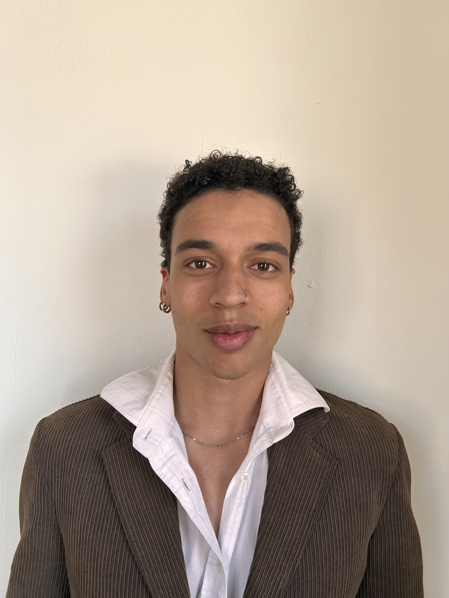

President
Mathis Henaux
I’ve always been in love with art since my childhood. I love acting, filmmaking, and absolutely anything to do with music. Being able to travel the world since such a young age exposed me to art in so many different ways, and I love to carry that into any of the work that I do. Being at GBS is so exhilarating for me because I get to experience first-hand the creativity and innovation of people from all around the world and hopefully contribute something meaningful too!